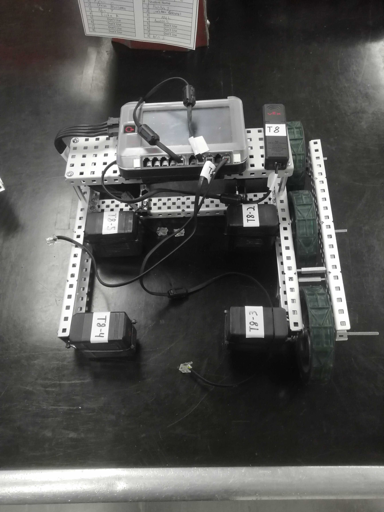
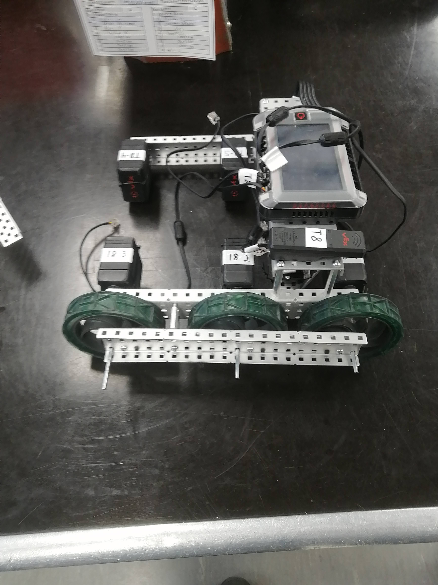
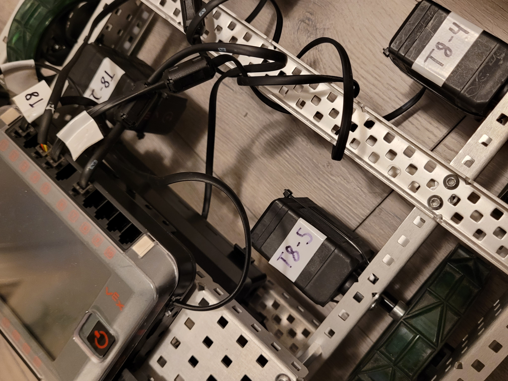

Date: 09/02/2023 | Log #: 1 | Contributer: Veer Singh
We have decided to completely redesign our entire robot. We have come to this decision due to our utter failure at the Mecha Mayhem Signature event in Calgary, AB.
Here is a list of failure with our previous robot:
- The robot had really bad controls
- Our intake system sucked; Disks had a tendency to get stuck on drive train motors
- We had no way of scoring in the high goal
- We had no way of scoring rollers(Although on the second day of the tournament we were able to scrap together a mechanism to score rollers)
- Our robot did not have enough torque to successfully defend against other, bigger, and heavier robots
- Random parts of our robot had a habit of falling off
- We found that strafing was really ineffective and just allowed other teams to push us around
To fix the issue of not having enough power in our drive train we are using a 6 motor setup with traction wheels instead of our previous 4 motor setup with mecanum wheels.
We are also planning for this robot to be better for moving quickly around the arena and scoring roller and points in the high goal instead of defending.
Instead a of a flywheel launch system we are opting for a catapult or other tension based launch system. We have noticed that all the teams that got in the top 16 at Mecha Mayhem
mostly used a catapult for their launcher.
Our current robot looks like this:



$$x = \frac{-b \pm \sqrt{b^2 - 4ac}}{2a}$$